Visualising molecular phenotypes inferred from individual samples using singscore, vissE and msigdb
Dharmesh D Bhuva
Bioinformatics Division, Walter and Eliza Hall Institute of Medical Research, Parkville, VIC 3052, AustraliaDepartment of Medical Biology, University of Melbourne, Parkville, VIC 3010, Australiabhuva.d@wehi.edu.au
Chin Wee Tan
Bioinformatics Division, Walter and Eliza Hall Institute of Medical Research, Parkville, VIC 3052, AustraliaDepartment of Medical Biology, University of Melbourne, Parkville, VIC 3010, Australiacwtan@wehi.edu.au
Melissa J Davis
Bioinformatics Division, Walter and Eliza Hall Institute of Medical Research, Parkville, VIC 3052, AustraliaDepartment of Medical Biology, University of Melbourne, Parkville, VIC 3010, AustraliaDepartment of Biochemistry and Molecular Biology, Faculty of Medicine, Dentistry and Health Sciences, University of Melbourne, Parkville, VIC, 3010, Australiadavis.m@wehi.edu.au
Aug 2021
Source:vignettes/workflow_singscore_vissE.Rmd
workflow_singscore_vissE.RmdAbstract
Abstract
R version: R version 4.1.0 (2021-05-18)
Bioconductor version: 3.14
Package version: 0.9.1
Introduction
A standard bioinformatics analysis of ’omics data will produce a list of molecules following statistical analysis. In the context of transcriptomics, these molecules are genes or transcripts and the statistical approach used to identify them is mostly a differential expression analysis. Once genes have been identified as differentially expressed in an experiment, biologists are often interested in understanding their biological implications. This is done by understanding their functional role in the biological system being investigated. The role and function of many genes is known to some extent and this is an area of continued research. Knowledge on gene function is often encoded into knowledgebases such as the gene ontology and other pathway databases. Given these functional annotations, we are interested in identifying over-represented functions in our data.
To do so, we use gene-set enrichment analysis, a group of methods designed to identify enriched functions represented by collections of genes known as gene-sets. This workflow will demonstrate functional analysis of transcriptomic data using the molecular signatures database (through the msigdb R/Bioconductor package) and a gene-set enrichment method, singscore. It will also demonstrate how higher order biological themes can be identified in data using the vissEpackage. It will begin by loading gene expression data and gene-sets from the ExperimentHub using the emtdata and msigdb R/Bioconductor packages. Molecular phenotypes representing the functional characterisitic of Samples will be identified using the single-sample gene-set enrichment method, singscore. Finally, higher-order functional themes will be identified using vissE.
Description of the biological problem
Epithelial–mesenchymal transition (EMT) is a cellular process where static and polarised epithelial cells convert to a motile mesenchymal phenotype. It is the fundamental mechanism involved in embryogenesis and tissue differentiation and in the context of cancer, implicated in the cancer progression and metastasis. EMT entails a progressive loss of epithelial characteristics and acquisition of mesenchymal features, which in cancer enables cells to acquire migratory and invasive properties, induces stemness, avoid apoptosis and senescence and become immune-resistant. [Yilmaz2009, Thiery2009, Polyak2009, Książkiewicz2012]
EMT is characterised by downregulation of epithelial markers (e.g E-cadherin, claudins) and upregulation of mesenchymal markers (e.g., vimentin, N-cadherin)), resulting in the loss of cell–cell adhesion and cell polarity, and the acquisition of migratory and invasive properties. There is a switch between keratin-rich adheren junction network to a vimentin-rich focal adhesion network with cadherin switch from E-cadherin to N-cadherin.[Tomita2000]
Although cancer cells utilise EMT to facilitating metastatic spread, they rarely fully convert to the mesenchymal phenotype, and instead presents a hybrid phenotype loosely termed epithelial mesenchymal plasticity (EMP). EMP has been associated with increased metastasis risk and poor prognosis in breast cancer (Cursons et al. 2015). There are currently limited specific markers proposed for this transient/metastable phenotype, owing to the lack of reliable progression readout and consequent limited studies for the transitional and progression states of EMT. Identification of specific markers of this hybrid state will provide crucial information to identify interventions for metastasis as well as mechanistic insights to uncover potential therapeutics. [Ribeiro2015]
In this workflow, we utilise bulk transcriptomics data from (Cursons et al. 2015) study which interrogates EMP in two breast cancer cell line models, namely the PMC42 system (PMC42-ET and PMC42-LA sublines) and MDA-MB-468 cells. There are numerous avenues to induce EMT, with epidermal growth factor (EGF) signalling via the EGFRs being one such stimuli. Notably signalling via EGFRs is also well-established driver of breast cancer progression. In this study, EMT was induced using EGF stimulation, and by hypoxia for MDA-MB-468 cells.(Cursons et al. 2015)
PMC42-LA is an epithelial subline derived from the vimentin positive, E-Cadherin negative parental PMC42-ET cells with both classified as having a “Basal B” transcriptome (expressed mesenchymal gene, lacked epithelial marker expression). Both of the PMC42 cell-lines undergo EGF-driven EMT, but PMC42-ET’s response is reduced due to higher basal vimentin expression.(Cursons et al. 2015)
Molecular phenotyping of individual samples
To preform molecular phenotyping of the data from (Cursons et al. 2015), we need the RNA-seq counts and appropriate gene-sets that represent the molecular phenotypes of interest. We will use processed RNA-seq data from the emtdata package in this workflow. We will then score individual samples against custom gene signatures from (Tan et al. 2014) and from the molecular signatures database (MSigDB) (Subramanian et al. (2005)) using singscore (Bhuva, Cursons, and Davis (2020)).
Load data
The emtdata package contains multiple pre-processed RNA-seq data from experiments studying the epithelial to mesenchymal transition. The package contains the following processed datasets:
- cursons2015_se - RNA-seq data from various breast cancer cell lines representing different degrees of epithelial and mesenchymal phenotypes (Cursons et al. 2015).
- cursons2018_se - RNA-seq data from the human mammary epithelial (HMLE) cell line treated with TGF\(\beta\) to induce an epithelial to mesenchymal transition (EMT) which is followed by treatment with miR-200c to induce a mesenchymal to epithelial transition (MET) (Cursons et al. 2018).
- foroutan2017_se - A compendium of EMT induction experiments combined and corrected for batch effects (Foroutan et al. 2017).
The data used in this workflow is the (Cursons et al. 2015) RNA-seq data. RNA-seq reads downloaded from the sequencing read archive (SRA) and processed using the Subread aligner (Liao, Smyth, and Shi 2013) and featureCounts (Liao, Smyth, and Shi 2014) to generate a counts matrix. Following this, genes with low expression were filtered out using edgeR::filterByExpr(). Normalisation factors were computed using TMM (Robinson and Oshlack 2010) and reads per kilobase per million (RPKM) values computed using function in the edgeR R/Bioconductor package (Chen et al. 2021). Data were then stored in a SummarizedExperiment object that can be retrieved from the ExperimentHub using the emtdata R/Bioconductor package.
Data from the emtdata package can be retireved by using accessors within the package or by querying the ExperimentHub. The query below searches for all objects in the hub associated with the search term “emtdata.” Information about three datasets available in the emtdata package is retrieved.
library(ExperimentHub)
eh = ExperimentHub()
res = query(eh, 'emtdata')
res## ExperimentHub with 3 records
## # snapshotDate(): 2021-08-18
## # $dataprovider: Walter and Eliza Hall Institute of Medical Research, Queens...
## # $species: Homo sapiens
## # $rdataclass: GSEABase::SummarizedExperiment
## # additional mcols(): taxonomyid, genome, description,
## # coordinate_1_based, maintainer, rdatadateadded, preparerclass, tags,
## # rdatapath, sourceurl, sourcetype
## # retrieve records with, e.g., 'object[["EH5439"]]'
##
## title
## EH5439 | foroutan2017_se
## EH5440 | cursons2018_se
## EH5441 | cursons2015_seWe can view all metadata associated with each object using the mcols() function. This information links back to the original publication for each data. We can also see information on the species this data was generated from.
#retrieve metadata for records
mcols(res)## DataFrame with 3 rows and 15 columns
## title dataprovider species taxonomyid
## <character> <character> <character> <integer>
## EH5439 foroutan2017_se Walter and Eliza Hal.. Homo sapiens 9606
## EH5440 cursons2018_se Queensland Universit.. Homo sapiens 9606
## EH5441 cursons2015_se Center for Cancer Bi.. Homo sapiens 9606
## genome description coordinate_1_based
## <character> <character> <integer>
## EH5439 NA Gene expression data.. 1
## EH5440 NA Gene expression data.. 1
## EH5441 NA Gene expression data.. 1
## maintainer rdatadateadded preparerclass
## <character> <character> <character>
## EH5439 Malvika D. Kharbanda.. 2021-03-30 emtdata
## EH5440 Malvika D. Kharbanda.. 2021-03-30 emtdata
## EH5441 Malvika D. Kharbanda.. 2021-03-30 emtdata
## tags rdataclass
## <list> <character>
## EH5439 Gene_Expression,Homo_sapiens_Data GSEABase::Summarized..
## EH5440 HMLE,Homo_sapiens_Data GSEABase::Summarized..
## EH5441 Homo_sapiens_Data,MDA-MB-468,PMC42-ET,... GSEABase::Summarized..
## rdatapath sourceurl sourcetype
## <character> <character> <character>
## EH5439 emtdata/foroutan2017.. https://doi.org/10.4.. TXT
## EH5440 emtdata/cursons2018_.. https://www.ncbi.nlm.. TXT
## EH5441 emtdata/cursons2015_.. https://www.ncbi.nlm.. TXTObjects can then be retrieved using the accession ID (“EH5441”) or using the function cursons2015_se(). Data are stored as SummarizedExperiment objects and the functions rowData(), colData() and assay() can be used to interact with the object. We see that the data has measurements for approximately 30000 genes across 21 samples. Both count-level data and logRPKM measurements are stored in the object.
library(SummarizedExperiment)
library(emtdata)
#load using object ID
emt_se = eh[['EH5441']]
#alternative approach
emt_se = cursons2015_se()
emt_se## class: SummarizedExperiment
## dim: 29866 21
## metadata(0):
## assays(2): counts logRPKM
## rownames(29866): ENSG00000223972 ENSG00000227232 ... ENSG00000271254
## ENSG00000275405
## rowData names(7): Chr Start ... gene_name gene_biotype
## colnames(21): MDA468_Ctrl_Rep1 MDA468_Ctrl_Rep2 ... PMC42LA_EGF_Rep2
## PMC42LA_EGF_Rep3
## colData names(14): group lib.size ... Organism SRA.StudyThe sample annotations show us that there are 3 cell lines in this data (PMC42-ET, PMC42-LA and MDA-MB-648). These cell lines have been treated with Hypoxia and EGF with measurements taken either 3 or 7 days post treatment. We also get metadata associated with each sample, including the original SRA identifier and their library sizes.
#view sample annotations
as.data.frame(colData(emt_se))## group lib.size norm.factors Run
## MDA468_Ctrl_Rep1 1 114794500 0.9743731 SRR3576739,SRR3576768,SRR3591405
## MDA468_Ctrl_Rep2 1 114491243 0.9931838 SRR3576740,SRR3576770,SRR3591406
## MDA468_Ctrl_Rep3 1 107923317 1.0358755 SRR3576751,SRR3576784,SRR3591417
## MDA468_EGF_Rep1 1 120949415 0.9793903 SRR3576753,SRR3576786,SRR3591419
## MDA468_EGF_Rep2 1 108830760 0.9865599 SRR3576754,SRR3576788,SRR3591420
## MDA468_EGF_Rep3 1 95608850 0.9006452 SRR3576755,SRR3576790,SRR3591421
## MDA468_HPX_Rep1 1 103636210 0.9782668 SRR3576756,SRR3576791,SRR3591422
## MDA468_HPX_Rep2 1 99763188 1.0218358 SRR3576757,SRR3576792,SRR3591423
## MDA468_HPX_Rep3 1 111820864 0.9914170 SRR3576758,SRR3576793,SRR3591424
## PMC42ET_Ctrl_Rep1 1 71276286 1.0443833 SRR3576759,SRR3576795,SRR3591425
## PMC42ET_Ctrl_Rep2 1 74625943 0.9957722 SRR3576741,SRR3576771,SRR3591407
## PMC42ET_Ctrl_Rep3 1 104167668 1.0622063 SRR3576742,SRR3576772,SRR3591408
## PMC42ET_EGF_Rep1 1 74711695 1.0303307 SRR3576743,SRR3576773,SRR3591409
## PMC42ET_EGF_Rep2 1 87532741 1.0312069 SRR3576744,SRR3576775,SRR3591410
## PMC42ET_EGF_Rep3 1 102691326 1.0485896 SRR3576745,SRR3576776,SRR3591411
## PMC42LA_Ctrl_Rep1 1 66771046 0.9511911 SRR3576746,SRR3576777,SRR3591412
## PMC42LA_Ctrl_Rep2 1 89935383 0.9872186 SRR3576747,SRR3576779,SRR3591413
## PMC42LA_Ctrl_Rep3 1 74822017 0.9930820 SRR3576748,SRR3576781,SRR3591414
## PMC42LA_EGF_Rep1 1 80151428 0.9440959 SRR3576749,SRR3576782,SRR3591415
## PMC42LA_EGF_Rep2 1 88233254 1.0227524 SRR3576750,SRR3576783,SRR3591416
## PMC42LA_EGF_Rep3 1 85941564 1.0437588 SRR3576752,SRR3576785,SRR3591418
## Sample.Name Subline Treatment BioProject
## MDA468_Ctrl_Rep1 MDA468_Ctrl_Rep1 MDA-MB-468 control PRJNA322427
## MDA468_Ctrl_Rep2 MDA468_Ctrl_Rep2 MDA-MB-468 control PRJNA322427
## MDA468_Ctrl_Rep3 MDA468_Ctrl_Rep3 MDA-MB-468 control PRJNA322427
## MDA468_EGF_Rep1 MDA468_EGF_Rep1 MDA-MB-468 EGF - 7d PRJNA322427
## MDA468_EGF_Rep2 MDA468_EGF_Rep2 MDA-MB-468 EGF - 7d PRJNA322427
## MDA468_EGF_Rep3 MDA468_EGF_Rep3 MDA-MB-468 EGF - 7d PRJNA322427
## MDA468_HPX_Rep1 MDA468_HPX_Rep1 MDA-MB-468 Hypoxia - 7d PRJNA322427
## MDA468_HPX_Rep2 MDA468_HPX_Rep2 MDA-MB-468 Hypoxia - 7d PRJNA322427
## MDA468_HPX_Rep3 MDA468_HPX_Rep3 MDA-MB-468 Hypoxia - 7d PRJNA322427
## PMC42ET_Ctrl_Rep1 PMC42ET_Ctrl_Rep1 PMC42-ET control PRJNA322427
## PMC42ET_Ctrl_Rep2 PMC42ET_Ctrl_Rep2 PMC42-ET control PRJNA322427
## PMC42ET_Ctrl_Rep3 PMC42ET_Ctrl_Rep3 PMC42-ET control PRJNA322427
## PMC42ET_EGF_Rep1 PMC42ET_EGF_Rep1 PMC42-ET EGF - 3d PRJNA322427
## PMC42ET_EGF_Rep2 PMC42ET_EGF_Rep2 PMC42-ET EGF - 3d PRJNA322427
## PMC42ET_EGF_Rep3 PMC42ET_EGF_Rep3 PMC42-ET EGF - 3d PRJNA322427
## PMC42LA_Ctrl_Rep1 PMC42LA_Ctrl_Rep1 PMC42-LA control PRJNA322427
## PMC42LA_Ctrl_Rep2 PMC42LA_Ctrl_Rep2 PMC42-LA control PRJNA322427
## PMC42LA_Ctrl_Rep3 PMC42LA_Ctrl_Rep3 PMC42-LA control PRJNA322427
## PMC42LA_EGF_Rep1 PMC42LA_EGF_Rep1 PMC42-LA EGF - 3d PRJNA322427
## PMC42LA_EGF_Rep2 PMC42LA_EGF_Rep2 PMC42-LA EGF - 3d PRJNA322427
## PMC42LA_EGF_Rep3 PMC42LA_EGF_Rep3 PMC42-LA EGF - 3d PRJNA322427
## BioSample Center.Name
## MDA468_Ctrl_Rep1 SAMN05162532 Queensland University of Technology
## MDA468_Ctrl_Rep2 SAMN05162533 Queensland University of Technology
## MDA468_Ctrl_Rep3 SAMN05162534 Queensland University of Technology
## MDA468_EGF_Rep1 SAMN05162535 Queensland University of Technology
## MDA468_EGF_Rep2 SAMN05162536 Queensland University of Technology
## MDA468_EGF_Rep3 SAMN05162537 Queensland University of Technology
## MDA468_HPX_Rep1 SAMN05162538 Queensland University of Technology
## MDA468_HPX_Rep2 SAMN05162539 Queensland University of Technology
## MDA468_HPX_Rep3 SAMN05162540 Queensland University of Technology
## PMC42ET_Ctrl_Rep1 SAMN05162541 Queensland University of Technology
## PMC42ET_Ctrl_Rep2 SAMN05162542 Queensland University of Technology
## PMC42ET_Ctrl_Rep3 SAMN05162543 Queensland University of Technology
## PMC42ET_EGF_Rep1 SAMN05162544 Queensland University of Technology
## PMC42ET_EGF_Rep2 SAMN05162545 Queensland University of Technology
## PMC42ET_EGF_Rep3 SAMN05162546 Queensland University of Technology
## PMC42LA_Ctrl_Rep1 SAMN05162547 Queensland University of Technology
## PMC42LA_Ctrl_Rep2 SAMN05162548 Queensland University of Technology
## PMC42LA_Ctrl_Rep3 SAMN05162549 Queensland University of Technology
## PMC42LA_EGF_Rep1 SAMN05162550 Queensland University of Technology
## PMC42LA_EGF_Rep2 SAMN05162551 Queensland University of Technology
## PMC42LA_EGF_Rep3 SAMN05162552 Queensland University of Technology
## Experiment Cell.Line Organism
## MDA468_Ctrl_Rep1 SRX1795037,SRX1795064,SRX1802009 MDA-MB-468 Homo sapiens
## MDA468_Ctrl_Rep2 SRX1795038,SRX1795066,SRX1802010 MDA-MB-468 Homo sapiens
## MDA468_Ctrl_Rep3 SRX1795049,SRX1795078,SRX1802021 MDA-MB-468 Homo sapiens
## MDA468_EGF_Rep1 SRX1795051,SRX1795080,SRX1802023 MDA-MB-468 Homo sapiens
## MDA468_EGF_Rep2 SRX1795052,SRX1795081,SRX1802024 MDA-MB-468 Homo sapiens
## MDA468_EGF_Rep3 SRX1795053,SRX1795082,SRX1802025 MDA-MB-468 Homo sapiens
## MDA468_HPX_Rep1 SRX1795054,SRX1795083,SRX1802026 MDA-MB-468 Homo sapiens
## MDA468_HPX_Rep2 SRX1795055,SRX1795084,SRX1802027 MDA-MB-468 Homo sapiens
## MDA468_HPX_Rep3 SRX1795056,SRX1795086,SRX1802028 MDA-MB-468 Homo sapiens
## PMC42ET_Ctrl_Rep1 SRX1795057,SRX1795087,SRX1802029 PMC42-ET Homo sapiens
## PMC42ET_Ctrl_Rep2 SRX1795039,SRX1795067,SRX1802011 PMC42-ET Homo sapiens
## PMC42ET_Ctrl_Rep3 SRX1795040,SRX1795068,SRX1802012 PMC42-ET Homo sapiens
## PMC42ET_EGF_Rep1 SRX1795041,SRX1795069,SRX1802013 PMC42-ET Homo sapiens
## PMC42ET_EGF_Rep2 SRX1795042,SRX1795070,SRX1802014 PMC42-ET Homo sapiens
## PMC42ET_EGF_Rep3 SRX1795043,SRX1795071,SRX1802015 PMC42-ET Homo sapiens
## PMC42LA_Ctrl_Rep1 SRX1795044,SRX1795072,SRX1802016 PMC42-LA Homo sapiens
## PMC42LA_Ctrl_Rep2 SRX1795045,SRX1795073,SRX1802017 PMC42-LA Homo sapiens
## PMC42LA_Ctrl_Rep3 SRX1795046,SRX1795074,SRX1802018 PMC42-LA Homo sapiens
## PMC42LA_EGF_Rep1 SRX1795047,SRX1795075,SRX1802019 PMC42-LA Homo sapiens
## PMC42LA_EGF_Rep2 SRX1795048,SRX1795076,SRX1802020 PMC42-LA Homo sapiens
## PMC42LA_EGF_Rep3 SRX1795050,SRX1795079,SRX1802022 PMC42-LA Homo sapiens
## SRA.Study
## MDA468_Ctrl_Rep1 SRP075592
## MDA468_Ctrl_Rep2 SRP075592
## MDA468_Ctrl_Rep3 SRP075592
## MDA468_EGF_Rep1 SRP075592
## MDA468_EGF_Rep2 SRP075592
## MDA468_EGF_Rep3 SRP075592
## MDA468_HPX_Rep1 SRP075592
## MDA468_HPX_Rep2 SRP075592
## MDA468_HPX_Rep3 SRP075592
## PMC42ET_Ctrl_Rep1 SRP075592
## PMC42ET_Ctrl_Rep2 SRP075592
## PMC42ET_Ctrl_Rep3 SRP075592
## PMC42ET_EGF_Rep1 SRP075592
## PMC42ET_EGF_Rep2 SRP075592
## PMC42ET_EGF_Rep3 SRP075592
## PMC42LA_Ctrl_Rep1 SRP075592
## PMC42LA_Ctrl_Rep2 SRP075592
## PMC42LA_Ctrl_Rep3 SRP075592
## PMC42LA_EGF_Rep1 SRP075592
## PMC42LA_EGF_Rep2 SRP075592
## PMC42LA_EGF_Rep3 SRP075592Gene identifiers in this data are Ensembl gene identifiers, however, gene symbols or Entrez IDs will be requried for the downstream analysis. We will convert Ensembl IDs to gene symbols as these are easier to interpret visually. The row annotations of emt_se contain mappings to other identifiers such as gene symbols. We can convert Ensembl IDs to gene symbols by using the mappings stored in the object. Due to the issue of multi-mapping between identifiers, we first have to deal with duplicate mappings. We can identify duplicates as below.
#identify duplicated mappings
all_genes = rowData(emt_se)$gene_name
dups = unique(all_genes[duplicated(all_genes)])
dups## [1] "Y_RNA" "RGS5" "TBCE" "LINC00486" "Metazoa_SRP"
## [6] "LINC01238" "CYB561D2" "POLR2J4" "POLR2J3" "5S_rRNA"
## [11] "TMSB15B" "ALG1L9P" "DNAJC9-AS1" "BMS1P4" "SNORA70"
## [16] "HERC2P7" "U2" "U3" "ELFN2" "5_8S_rRNA"
## [21] "U1"Most duplicates are arising from miscellaneous RNA therefore duplicated mappings can either be removed or resolved manually using other annotations such as their biotypes (for example, retaining protein coding genes). For simplicity, we discard multimapped genes in this analysis. Since the number of genes being discarded is relatively small and the genes being discarded are unrelated to the process we wish to study (EMT), the effect of their removal will be minimal and can be safely ignored.
#remove duplicated genes
emt_se = emt_se[!all_genes %in% dups, ]
rownames(emt_se) = rowData(emt_se)$gene_name
emt_se## class: SummarizedExperiment
## dim: 29752 21
## metadata(0):
## assays(2): counts logRPKM
## rownames(29752): DDX11L1 WASH7P ... AC004556.3 AC240274.1
## rowData names(7): Chr Start ... gene_name gene_biotype
## colnames(21): MDA468_Ctrl_Rep1 MDA468_Ctrl_Rep2 ... PMC42LA_EGF_Rep2
## PMC42LA_EGF_Rep3
## colData names(14): group lib.size ... Organism SRA.StudyLoad gene-sets
Gene-sets representing the molecular phenotypes of interest need to be prepared to query individual samples against. We can either use signatures from the molecular signatures database made available through the msigdb R/Bioconductor package or we can use custom signatures from publications. Tan et al. (2014) developed gene-sets that represent an epithelial and a mesenchymal phenotype. We will use these to explore the epithelial-mesenchymal landscape of samples. Data from the publication is organised in the Thiery_EMTsignatures.txt file that is stored in the package associated with this workflow.
#read Thiery et al. signatures
thiery_path = system.file('extdata/Thiery_EMTsignatures.txt', package = 'GenesetAnalysisWorkflow')
thiery_data = read.table(thiery_path, header = TRUE)
head(thiery_data)## officialSymbol genes epiMes_tumor epiMes_cellLine Ensembl.Gene.ID
## 1 ABCC3 ABCC3 epi epi ENSG00000108846
## 2 ABHD11 ABHD11 epi <NA> ENSG00000106077
## 3 ADAP1 ADAP1 <NA> epi ENSG00000105963
## 4 ADIRF C10orf116 <NA> epi ENSG00000148671
## 5 AGR2 AGR2 epi epi ENSG00000106541
## 6 AIM1 AIM1 <NA> epi ENSG00000112297
## HGNC.symbol EntrezGene.ID
## 1 ABCC3 8714
## 2 ABHD11 83451
## 3 ADAP1 11033
## 4 ADIRF 10974
## 5 AGR2 10551
## 6 AIM1 202Since gene symbols are used in the gene expression data, we will use create gene-sets using gene symbols. We will use signatures specific to cell lines from Tan et al. (2014). Gene-sets are stored in the dedicated GSEABase::GeneSet object that allows storage of metadata associated with gene-sets. Singscore can work with gene-sets defined as a character vector or in GeneSet objects. Since the latter is more structured, we prefer to use them for our analysis. GeneSet objects are used in the following vissE analysis too, further motivating their use. Unique gene identifiers are required for GeneSet objects. It is good practice to specify a unique, well-defined setName for each gene-set. Additionally, to enable usage with the vissE package, we will specify the identifier type (i.e. SymbolIdentifier()).
library(GSEABase)
#retrieve epithelial genes
epi_genes = thiery_data$officialSymbol[thiery_data$epiMes_cellLine %in% 'epi']
#select unique genes
epi_genes = unique(epi_genes)
#create GeneSet object
epi_sig = GeneSet(epi_genes, setName = 'THIERY_EPITHELIAL_CELLLINE', geneIdType = SymbolIdentifier())
epi_sig## setName: THIERY_EPITHELIAL_CELLLINE
## geneIds: ABCC3, ADAP1, ..., ZNF165 (total: 170)
## geneIdType: Symbol
## collectionType: Null
## details: use 'details(object)'
#retrieve mesenchymal genes
mes_genes = thiery_data$genes[thiery_data$epiMes_cellLine %in% 'mes']
#select unique genes
mes_genes = unique(mes_genes)
#create GeneSet object
mes_sig = GeneSet(mes_genes, setName = 'THIERY_MESENCHYMAL_CELLLINE', geneIdType = SymbolIdentifier())
mes_sig## setName: THIERY_MESENCHYMAL_CELLLINE
## geneIds: AKAP12, ANK2, ..., ZEB1 (total: 48)
## geneIdType: Symbol
## collectionType: Null
## details: use 'details(object)'If the gene-sets of interest are available in the molecular signatures database (MSigDB), the msigdb package can be used. This package uses the ExperimentHub to make MSigDB gene-sets available as GeneSet objects in a GSEABase::GeneSetCollection object. The GeneSetCollection object can be used to store multiple GeneSet objects. The msigdb package provides signatures for human and mouse (the version provided by the Smyth lab at WEHI) using either gene symbols or Entrez IDs. The package provides versions of MSigDB including and greater than 7.2.
library(msigdb)
#load MSigDB gene-sets
msigdb.hs = getMsigdb(org = 'hs', id = 'SYM', version = '7.2')
#add KEGG gene-sets
msigdb.hs = appendKEGG(msigdb.hs)
msigdb.hs## GeneSetCollection
## names: chr11q, chr6q, ..., KEGG_VIRAL_MYOCARDITIS (31508 total)
## unique identifiers: AP001767.2, SLC22A9, ..., AC023491.2 (40044 total)
## types in collection:
## geneIdType: SymbolIdentifier (1 total)
## collectionType: BroadCollection (1 total)Singscore
With the data and gene-sets ready, we can now score samples against gene-sets to explore molecular phenotypes using singscore (Foroutan et al. 2018). Singscore is a rank-based single sample scoring approach implemented in the singscore R/Bioconductor package. The core computation of scores can be summarised in two steps: computing within sample gene ranks and computing gene-set scores using ranks. Data used for singscore should be length bias corrected (e.g. TPM, RPKM, RSEM) and should have filtered out genes with low expression across most samples. The data used here has been processed as such therefore no further pre-processing is required. Further information on length-bias correction and filtering with respect to singscore can be found in Bhuva et al. (2019).
library(singscore)
#rank genes based on expression (logRPKM)
eranks = rankGenes(assay(emt_se, 'logRPKM'))
#compute epithelial scores
epi_score = simpleScore(eranks, epi_sig)
head(epi_score)## TotalScore TotalDispersion
## MDA468_Ctrl_Rep1 0.3230845 3992.642
## MDA468_Ctrl_Rep2 0.3222157 4030.448
## MDA468_Ctrl_Rep3 0.3214232 4120.145
## MDA468_EGF_Rep1 0.3230362 4076.409
## MDA468_EGF_Rep2 0.3218094 4169.812
## MDA468_EGF_Rep3 0.3274617 3951.870
#compute mesenchymal scores
mes_score = simpleScore(eranks, mes_sig)
head(mes_score)## TotalScore TotalDispersion
## MDA468_Ctrl_Rep1 -0.027817504 10014.963
## MDA468_Ctrl_Rep2 -0.032615987 10333.722
## MDA468_Ctrl_Rep3 -0.030163516 10885.249
## MDA468_EGF_Rep1 0.014965710 10068.337
## MDA468_EGF_Rep2 0.008487366 10682.133
## MDA468_EGF_Rep3 0.018875730 8914.874Unlike other single-sample methods, the results from singscore contain two values, the score and the dispersion. We have found both to be useful in interpreting scores from gene-sets. The score is an indication of the median expression of all genes in the gene-set relative to all measured genes. The dispersion is a measure of the coordination of gene expression for genes in the signature. Lower dispersion indicates that genes in the gene-set are expressed at a similar level. The plotDispersion() function can be used to plot scores against their dispersions. Samples can be annotated using discrete or continous annotations. All plots in the singscore package can be turned into interactive plots by setting isInteractive = TRUE.
plotDispersion(
epi_score,
annot = emt_se$Subline,
annot_name = 'Subline',
size = 5,
alpha = 0.5,
isInteractive = FALSE
)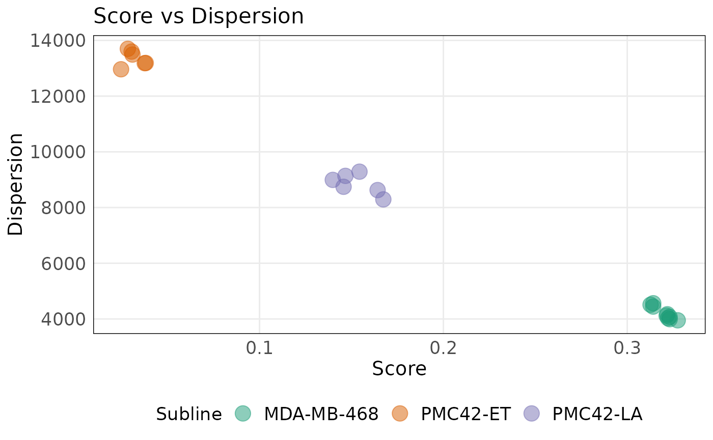
The plot above shows that the MDA-MB-468 cell line is more epithelial than the other cell lines as indicated by larger scores. Lower dispersion values for these samples indicate that epithelial genes are expressed at similar levels relative to other genes. The mesenchymal signature shows the inverse pattern with PMC42-ET and PMC42-LA cell lines having higher scores and lower dispersion values compared to MDA-MB-468.
plotDispersion(
mes_score,
annot = emt_se$Subline,
annot_name = 'Subline',
size = 5,
alpha = 0.5,
isInteractive = FALSE
)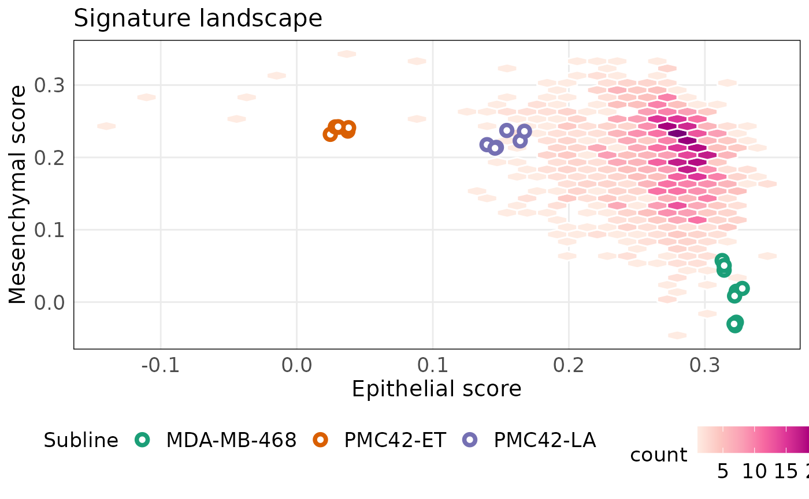
It is often useful to investigate the association between gene-sets, especially when phenotypes are expected to be associated biologically. Cursons et al. (2018) and Foroutan et al. (2018) have used the epithelial-mesenchymal landscapes to better understand the behaviour of biological models across the epithelial mesenchymal transition. Additionally, it is often the case in biology that biological models are compared with patient data to enable translation of discoveries. Singscore enables this by plotting cell line data on a background dataset. In the plots below, we plot breast cancer patient data from The Cancer Genome Atlas (TCGA) in the background. We then project our cell line data onto the patient data to explore and explain various aspects of the epithelial mesenchymal landscape. Projecting cell line data onto the patient data enables transfer of discoveries made on cell lines to patients. We use pre-computed epithelial and mesenchymal scores of TCGA breast cancer patient data from the singscore package.
#load pre-computed TCGA breast cancer EMT scores
data("scoredf_tcga_epi")
data("scoredf_tcga_mes")
#plot an EMT landscape
p_tcga = plotScoreLandscape(
scoredf1 = scoredf_tcga_epi,
scoredf2 = scoredf_tcga_mes,
scorenames = c('Epithelial score', 'Mesenchymal score')
)The plot below shows that PMC42-ET and PMC42-LA have similar mesenchymal scores, but very distinct epithelial scores. MDA-MB-468 on the other hand is a very epithelial cell line and less mesenchymal. We would suspect that PMC42-LA has both epithelial and mesenchymal properties. Like other plots in singscore, the plots below can be made interactive setting isInteractive = TRUE.
projectScoreLandscape(
p_tcga,
scoredf1 = epi_score,
scoredf2 = mes_score,
annot = emt_se$Subline,
annot_name = 'Subline',
isInteractive = FALSE
)
Annotating samples using the treatment shows that hypoxic treatment of MDA-MB-468 results in increased mesenchymal properties of the cell line.
projectScoreLandscape(
p_tcga,
scoredf1 = epi_score,
scoredf2 = mes_score,
annot = emt_se$Treatment,
annot_name = 'Treatment',
isInteractive = FALSE
)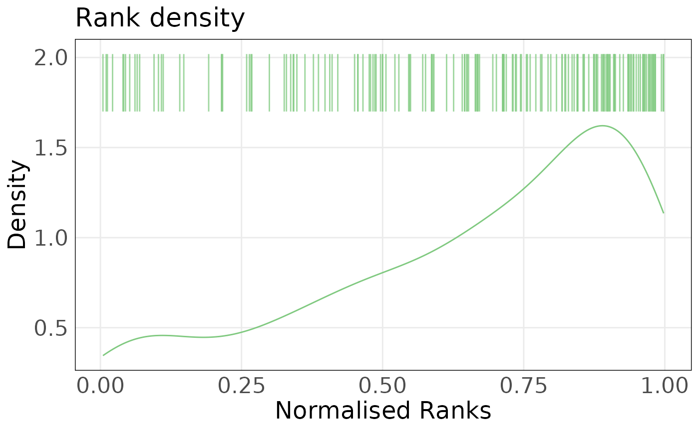
The Hallmark collection of the MSigDB represent key molecular processes associated with cancer progression. The HALLMARK_EPITHELIAL_MESENCHYMAL_TRANSITION represents EMT in cancer therefore we could compute scores for samples using it. We can annotate samples using the hallmark EMT score to assess their relation with the EMT landscape. The plot below shows that the combined epithelial-mesenchymal axis is represented by the hallmark EMT signature.
#extract the hallmark EMT signature
hemt_sig = msigdb.hs[['HALLMARK_EPITHELIAL_MESENCHYMAL_TRANSITION']]
#score samples using the hallmark EMT signature
hemt_score = simpleScore(eranks, hemt_sig)
#plot Hallmark EMT signature
projectScoreLandscape(
p_tcga,
scoredf1 = epi_score,
scoredf2 = mes_score,
annot = hemt_score$TotalScore,
annot_name = 'Hallmark EMT score',
isInteractive = FALSE
)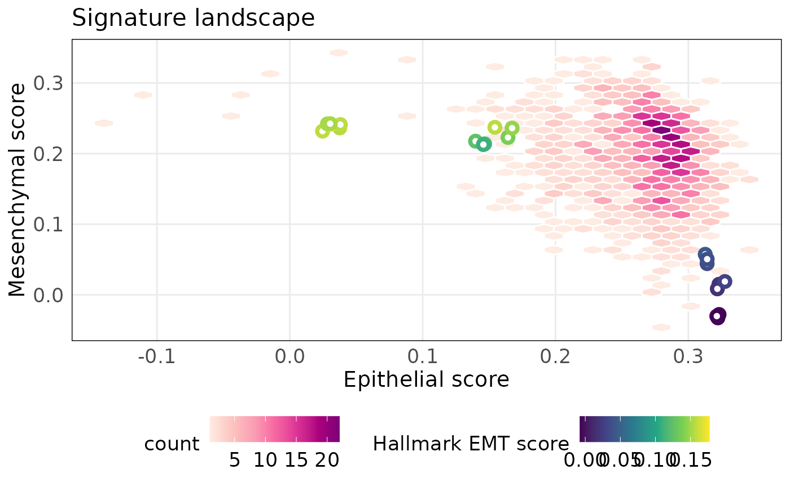
The above plots show that the difference between PMC42-ET and PMC42-LA is mainly along the epithelial axis. We can investigate the contribution of each gene across individual samples using the plotRankDensity() function. The distribution of unit normalised ranks shows that most genes in the epithelial gene-set are expressed at higher levels that all other genes in PMC42-LA. In contrast, epithelial genes are more dispersed in PMC42-ET. Interactive versions of these plots can be used to explore individual genes.
plotRankDensity(eranks[, 'PMC42LA_Ctrl_Rep1', drop = FALSE], epi_sig, isInteractive = FALSE)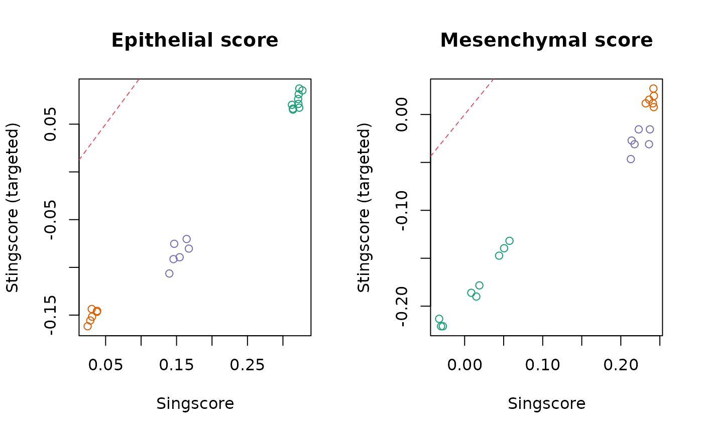
plotRankDensity(eranks[, 'PMC42ET_Ctrl_Rep1', drop = FALSE], epi_sig, isInteractive = FALSE)
Stingscore
At times whole transcriptome measurements are not feasible either due to costs or due to availability of high quality genomic material (as is the case with FFPE samples). In such cases, we may wish to work with targeted transcriptomic panels. Most gene-set scoring methods, including singscore, require transcriptome-wide measurements therefore making them unusable in a targeted sequencing context. In such cases, the stingscore method (Bhuva, Cursons, and Davis 2020) implemented in the singscore package can be used. Stingscore makes use of stably expressed genes to estimate gene-set scores using a reduced set of measurements.
To demonstrate usage of stingscore in a targeted seqencing context, we will simulate a targeted sequencing panel using epithelial genes, mesenchymal genes and a few stably expressed genes. We will use the top 5 stably expressed genes identified in Bhuva, Cursons, and Davis (2020) to score samples.
#simulate data by sub-sampling
sample_genes = union(geneIds(epi_sig), geneIds(mes_sig))
sample_genes = union(sample_genes, getStableGenes(5))
#subset genes with measurements in the data
sample_genes = intersect(sample_genes, rownames(emt_se))
#subset data
targeted_se = emt_se[sample_genes, ]
targeted_se## class: SummarizedExperiment
## dim: 214 21
## metadata(0):
## assays(2): counts logRPKM
## rownames(214): ABCC3 ADAP1 ... TARDBP HNRNPK
## rowData names(7): Chr Start ... gene_name gene_biotype
## colnames(21): MDA468_Ctrl_Rep1 MDA468_Ctrl_Rep2 ... PMC42LA_EGF_Rep2
## PMC42LA_EGF_Rep3
## colData names(14): group lib.size ... Organism SRA.StudyThe data samples genes of interest from the full data matrix resulting in the measurement of 214 genes. In reality, a panel of this size could be measure using technologies such as NanoString’s nCounter panel. The top 5 stably expressed genes used here could be used to score samples and to normalise expression measurements for additional analyses. The only difference between singscore and stingscore are in the way ranks are computed. In stingscore, ranks are estimated using stably expressed genes. Following rank estimation, scores can be computed as with singscore using the simpleScore() function.
st_genes = getStableGenes(5)
st_genes## [1] "RBM45" "BRAP" "CIAO1" "TARDBP" "HNRNPK"
#rank genes using stably expressed genes
st_eranks = rankGenes(targeted_se, stableGenes = st_genes)
#score samples using the simulated targeted sequencing data
epi_score_st = simpleScore(st_eranks, epi_sig)
mes_score_st = simpleScore(st_eranks, mes_sig)
#plot scores computed using singscore vs stingscore
colmap = c('MDA-MB-468' = '#1B9E77', 'PMC42-ET' = '#D95F02', 'PMC42-LA' = '#7570B3')
par(mfrow = c(1, 2))
plot(
epi_score$TotalScore,
epi_score_st$TotalScore,
col = colmap[targeted_se$Subline],
main = 'Epithelial score',
xlab = 'Singscore',
ylab = 'Stingscore (targeted)'
)
abline(coef = c(0, 1), col = 2, lty = 2)
plot(
mes_score$TotalScore,
mes_score_st$TotalScore,
col = colmap[targeted_se$Subline],
main = 'Mesenchymal score',
xlab = 'Singscore',
ylab = 'Stingscore (targeted)'
)
abline(coef = c(0, 1), col = 2, lty = 2)The plots above show that both epithelial and mesenchymal scores computed using singscore and stingscore are highly correlated. Though the scores are correlated, their values are not an exact match as there is an offset. As the relative order of samples remains the same, biological inferences are unaffected by the offset in scores computed using stingscore.
Multiscore
When the hypothesis are not pre-determined, we may wish to perform an exploratory analysis using multiple gene-sets. In such a scenario, we would wish to score samples against 100s-1000s of gene-sets which we would then summarise using further downstream analysis. The multiScore() function can be used to score samples against multiple signatures simultaneously. This implementation is much faster than simpleScore() and is therefore the recommended function for scoring against multiple gene-sets.
We will score samples against gene-sets from the hallmark collection, gene ontologies, KEGG pathways, Reactome pathways and Biocarta pathways. The subsetCollection() function in the msigdb package can be used to subset a GeneSetCollection based on MSigDB categories and sub-categories. The function returns GeneSetCollection objects which can be concatenated as normal lists. The resulting list needs to be converted back into a GeneSetCollection object before passing it to multiScore().
#subset collections and subcollections of interest
genesigs = c(
epi_sig,
mes_sig,
subsetCollection(msigdb.hs, 'h'),
subsetCollection(msigdb.hs, 'c2', c('CP:KEGG', 'CP:REACTOME', 'CP:BIOCARTA')),
subsetCollection(msigdb.hs, 'c5', c('GO:BP', 'GO:MF', 'GO:CC'))
)
genesigs = GeneSetCollection(genesigs)The results of multiScore() is a list containing a matrix of scores and a matrix of dispersion values. As some gene-sets could be entirely composed of genes not measured in the data, there may be missing values in these matrices.
eranks = rankGenes(assay(emt_se, 'logRPKM'))
msigdb_scores = multiScore(eranks, genesigs)
lapply(msigdb_scores, function(x) x[1:5, 1:2])## $Scores
## MDA468_Ctrl_Rep1 MDA468_Ctrl_Rep2
## THIERY_EPITHELIAL_CELLLINE 0.3230845 0.32221565
## THIERY_MESENCHYMAL_CELLLINE -0.0278175 -0.03261599
## HALLMARK_TNFA_SIGNALING_VIA_NFKB 0.1893111 0.18454327
## HALLMARK_HYPOXIA 0.1549132 0.15766930
## HALLMARK_CHOLESTEROL_HOMEOSTASIS 0.3035149 0.30298773
##
## $Dispersions
## MDA468_Ctrl_Rep1 MDA468_Ctrl_Rep2
## THIERY_EPITHELIAL_CELLLINE 3992.642 4030.448
## THIERY_MESENCHYMAL_CELLLINE 10014.963 10333.722
## HALLMARK_TNFA_SIGNALING_VIA_NFKB 7278.825 7191.351
## HALLMARK_HYPOXIA 7614.634 7633.907
## HALLMARK_CHOLESTEROL_HOMEOSTASIS 4222.445 4188.345
lapply(msigdb_scores, dim)## $Scores
## [1] 12352 21
##
## $Dispersions
## [1] 12352 21Plotting scores against dispersion values across all signatures demonstrates the usual trend between these two values. The trend is expected since strong positive or negative scores can only be obtained if genes in gene-sets are coordinately expressed. The more interesting gene-sets are those that have low dispersion with scores close to 0; these gene-sets contain coordinately expressed genes with average expression relative to all measured genes.
smoothScatter(msigdb_scores$Scores, msigdb_scores$Dispersions, xlab = 'Score', ylab = 'Dispersion', main = 'Score vs Dispersion')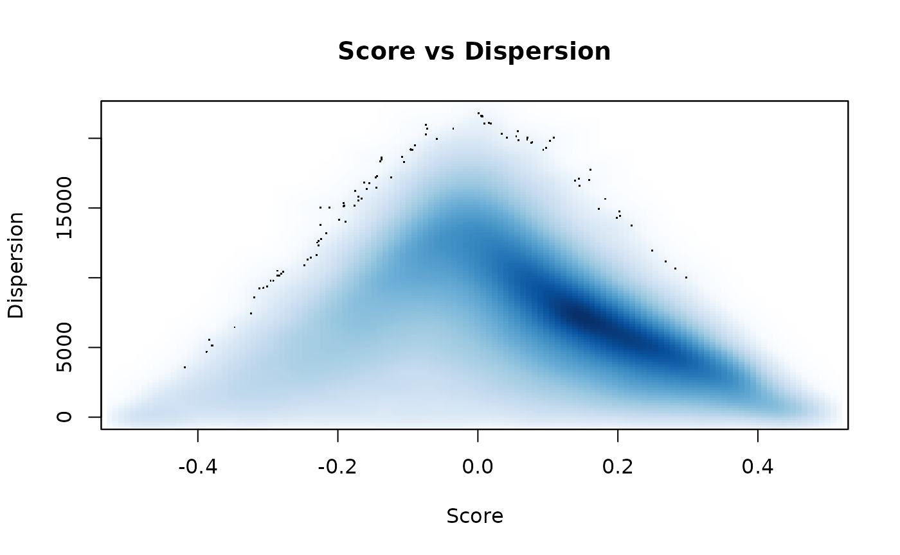
We can assess gene-sets for individual samples to determine their phenotype composition. As transcriptomic measurements are more biologically meaningful when assessed relatively, we compute the difference in scores between one PMC42-ET control replicate and another PMC42-LA control replicate. The top positive and negative scores are listed below.
#select scores for a single Hypoxic sample
et_la_scores = msigdb_scores$Scores[, 'PMC42ET_Ctrl_Rep1'] - msigdb_scores$Scores[, 'PMC42LA_Ctrl_Rep1']
et_la_scores = sort(et_la_scores)
head(et_la_scores)## GO_REGULATION_OF_EPINEPHRINE_SECRETION
## -0.3560168
## GO_POSITIVE_REGULATION_OF_MESODERM_FORMATION
## -0.3180387
## GO_REGULATION_OF_VERY_LOW_DENSITY_LIPOPROTEIN_PARTICLE_REMODELING
## -0.3061849
## GO_GAP_JUNCTION_CHANNEL_ACTIVITY_INVOLVED_IN_CELL_COMMUNICATION_BY_ELECTRICAL_COUPLING
## -0.3041113
## GO_INTERMEDIATE_DENSITY_LIPOPROTEIN_PARTICLE
## -0.2954161
## GO_NORADRENERGIC_NEURON_DIFFERENTIATION
## -0.2788329
tail(et_la_scores)## BIOCARTA_CYTOKINE_PATHWAY
## 0.2212715
## GO_POSITIVE_REGULATION_OF_T_CELL_TOLERANCE_INDUCTION
## 0.2223007
## GO_CORTICOTROPIN_RELEASING_HORMONE_RECEPTOR_BINDING
## 0.2240487
## GO_REGULATION_OF_LIPID_TRANSPORTER_ACTIVITY
## 0.2332605
## GO_11_CIS_RETINAL_BINDING
## 0.2378071
## GO_ESTROGEN_2_HYDROXYLASE_ACTIVITY
## 0.2410252Identifying and visualising higher-order phenotypes
Perform DE analysis
We perform DE analysis using the quasi-likelihood edgeR pipeline (Chen, Lun, and Smyth 2016).
library(edgeR)
library(limma)
#subset dataset to extract only control samples of PMC42-ET and PMC42-LA
emt_se_sub = emt_se[, emt_se$Subline %in% c('PMC42-ET', 'PMC42-LA') &
emt_se$Treatment == 'control']
#create DGElist object from SE object
emt_dge = asDGEList(emt_se_sub)
#create model design matrix
design = model.matrix(~ Subline, data = emt_dge$samples)
#remove lowly expressed genes
keep = filterByExpr(emt_dge, design = design)
emt_dge = emt_dge[keep, ]
#calculate normalisation factor using on TMM
emt_dge = calcNormFactors(emt_dge, method = "TMM")
#estimate dispersions
emt_dge = estimateDisp(emt_dge, design = design, robust = TRUE)
#fit usimg edgeR's Generalized Linear Models with Quasi-likelihood Tests (GLM) function
fit = glmQLFit(emt_dge, design, robust = TRUE)
#get DE genes list
res = glmQLFTest(fit, coef = 'SublinePMC42-LA')
is.de = decideTestsDGE(res)
plotMD(fit, status = is.de, main = 'PMC42-LA vs. PMC42-ET')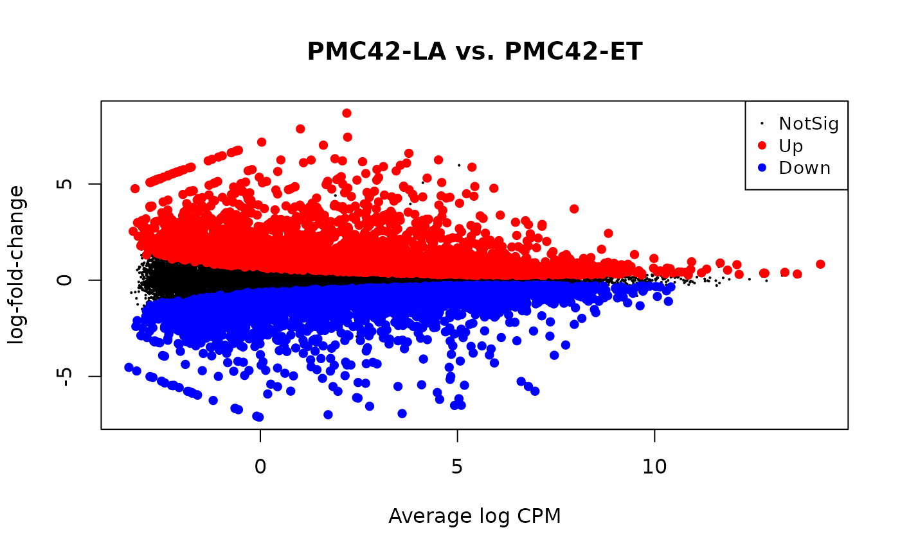
# get DE list based on p-value 0.05 cutoff
DE_list = as.data.frame(topTags(res, n = Inf, p.value = 0.05)[,-(1:6)])
head(DE_list)## gene_biotype logFC logCPM F PValue FDR
## FAT2 protein_coding -7.588511 6.614230 1334.7019 5.576353e-13 1.346410e-08
## TGFBR2 protein_coding -9.993858 3.596306 1040.0713 2.218916e-12 1.759046e-08
## SPINT1 protein_coding 6.890147 5.922593 985.9245 2.982160e-12 1.759046e-08
## PLS3 protein_coding -6.059286 5.070152 958.2729 3.489918e-12 1.759046e-08
## PLTP protein_coding -6.202561 5.935153 950.8729 3.642671e-12 1.759046e-08
## KLK11 protein_coding 8.779300 3.708962 877.8718 5.662833e-12 2.278818e-08
# get all genes statistics
allg_list = as.data.frame(topTags(res, n = Inf)[,-(1:6)])
Gene-set testing using limma::fry
#Use geneset collection (genesigs) generated earlier to create fry indices
fry_indices = ids2indices(geneIds(genesigs), rownames(emt_dge))
#remove very small and very large genesets
fry_indices = fry_indices[sapply(fry_indices, length) > 10
& sapply(fry_indices, length) < 500]
#Perform a geneset enrichment analysis using limma::fry
fry_res = fry(emt_dge,
index = fry_indices,
design = design,
contrast = 'SublinePMC42-LA')
#select significant results (FDR < 0.05)
fry_res = fry_res[fry_res$FDR < 0.05, ]
head(fry_res)## NGenes Direction
## GO_TRICARBOXYLIC_ACID_METABOLIC_PROCESS 13 Up
## GO_LABYRINTHINE_LAYER_MORPHOGENESIS 18 Up
## GO_DNA_UNWINDING_INVOLVED_IN_DNA_REPLICATION 16 Down
## GO_POSITIVE_REGULATION_OF_T_HELPER_CELL_DIFFERENTIATION 15 Up
## GO_DNA_POLYMERASE_COMPLEX 21 Down
## REACTOME_RA_BIOSYNTHESIS_PATHWAY 16 Up
## PValue
## GO_TRICARBOXYLIC_ACID_METABOLIC_PROCESS 7.343476e-07
## GO_LABYRINTHINE_LAYER_MORPHOGENESIS 2.604803e-06
## GO_DNA_UNWINDING_INVOLVED_IN_DNA_REPLICATION 3.526290e-06
## GO_POSITIVE_REGULATION_OF_T_HELPER_CELL_DIFFERENTIATION 3.787180e-06
## GO_DNA_POLYMERASE_COMPLEX 4.208996e-06
## REACTOME_RA_BIOSYNTHESIS_PATHWAY 4.238159e-06
## FDR
## GO_TRICARBOXYLIC_ACID_METABOLIC_PROCESS 0.004489003
## GO_LABYRINTHINE_LAYER_MORPHOGENESIS 0.004489003
## GO_DNA_UNWINDING_INVOLVED_IN_DNA_REPLICATION 0.004489003
## GO_POSITIVE_REGULATION_OF_T_HELPER_CELL_DIFFERENTIATION 0.004489003
## GO_DNA_POLYMERASE_COMPLEX 0.004489003
## REACTOME_RA_BIOSYNTHESIS_PATHWAY 0.004489003
## PValue.Mixed
## GO_TRICARBOXYLIC_ACID_METABOLIC_PROCESS 1.220636e-05
## GO_LABYRINTHINE_LAYER_MORPHOGENESIS 3.708566e-07
## GO_DNA_UNWINDING_INVOLVED_IN_DNA_REPLICATION 5.533273e-07
## GO_POSITIVE_REGULATION_OF_T_HELPER_CELL_DIFFERENTIATION 3.109981e-06
## GO_DNA_POLYMERASE_COMPLEX 6.086205e-06
## REACTOME_RA_BIOSYNTHESIS_PATHWAY 3.192814e-06
## FDR.Mixed
## GO_TRICARBOXYLIC_ACID_METABOLIC_PROCESS 1.980857e-05
## GO_LABYRINTHINE_LAYER_MORPHOGENESIS 3.173336e-06
## GO_DNA_UNWINDING_INVOLVED_IN_DNA_REPLICATION 3.608736e-06
## GO_POSITIVE_REGULATION_OF_T_HELPER_CELL_DIFFERENTIATION 7.916704e-06
## GO_DNA_POLYMERASE_COMPLEX 1.208747e-05
## REACTOME_RA_BIOSYNTHESIS_PATHWAY 8.019966e-06Prepare gene-set testing results for vissE
#create a GeneSetCollection for the significant gene-sets
siggs = genesigs[rownames(fry_res)]
siggs## GeneSetCollection
## names: GO_TRICARBOXYLIC_ACID_METABOLIC_PROCESS, GO_LABYRINTHINE_LAYER_MORPHOGENESIS, ..., GO_PLATELET_ALPHA_GRANULE_LUMEN (1667 total)
## unique identifiers: CS, SIRT4, ..., CDY2A (13779 total)
## types in collection:
## geneIdType: SymbolIdentifier (1 total)
## collectionType: BroadCollection, NullCollection (2 total)
#prepare gene-set statistics for visualisation (signed -log10(FDR))
gsStats = -log10(fry_res$FDR)
#use a positive sign to indicate up-regulated gene-sets
gsStats = gsStats * c('Up' = 1, 'Down' = -1)[fry_res$Direction]
#has to be a named vector
names(gsStats) = rownames(fry_res)
head(gsStats)## GO_TRICARBOXYLIC_ACID_METABOLIC_PROCESS
## 2.34785
## GO_LABYRINTHINE_LAYER_MORPHOGENESIS
## 2.34785
## GO_DNA_UNWINDING_INVOLVED_IN_DNA_REPLICATION
## -2.34785
## GO_POSITIVE_REGULATION_OF_T_HELPER_CELL_DIFFERENTIATION
## 2.34785
## GO_DNA_POLYMERASE_COMPLEX
## -2.34785
## REACTOME_RA_BIOSYNTHESIS_PATHWAY
## 2.34785
#prepare gene-level statistics for visualisation (logFC)
gStats = allg_list$logFC
#has to be a named vector
names(gStats) = rownames(allg_list)
head(gStats)## FAT2 TGFBR2 SPINT1 PLS3 PLTP KLK11
## -7.588511 -9.993858 6.890147 -6.059286 -6.202561 8.779300Compute the overlap network
The default approach to computing overlaps is using the Jaccard index. Overlap is computed based on the gene overlap between gene-sets. Alternatively, the overlap coefficient can be used. The latter can be used to highlight hierarchical overlaps (such as those present in the gene ontology).
library(vissE)
library(igraph)
#compute gene-set overlaps between significant gene-sets
gs_ovlap = computeMsigOverlap(siggs, thresh = 0.25, measure = 'jaccard')
#create a network from overlaps
gs_ovnet = computeMsigNetwork(gs_ovlap, msigGsc = siggs)
#plot the network
set.seed(21) #set seed for reproducible layout
plotMsigNetwork(gs_ovnet)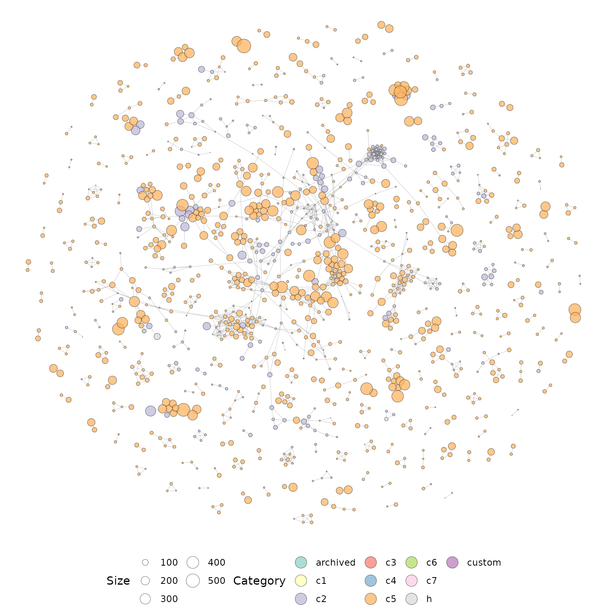
The overlap network plot above is annotated based on the MSigDB categories used. We can annotate it with a gene-level statistic. Here we use a signed -log10(FDR) where the sign represents the direction of change.
#plot the network and overlay gene-set statistics
set.seed(21) #set seed for reproducible layout
plotMsigNetwork(gs_ovnet, genesetStat = gsStats)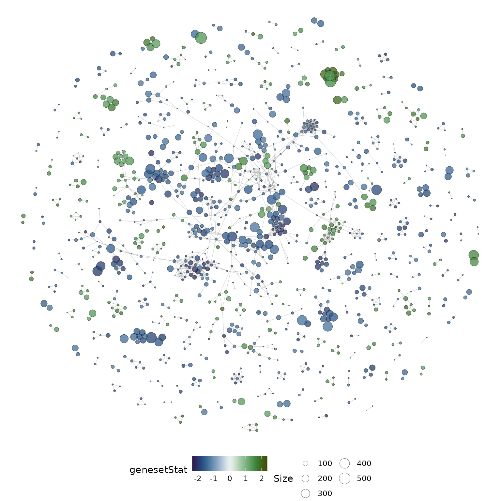
Identify communities within the network
#identify clusters using a graph clustering algorithm
grps = cluster_walktrap(gs_ovnet)
#extract clustering results
grps = groups(grps)
#remove small groups
grps = grps[sapply(grps, length) > 5]
length(grps)## [1] 43Since we could have numerous gene-set clusters, we need to come up with a prioritisation scheme to explore them. We maximise the cluster size and statistic using the product-of-ranks approach to achieve this.
#compute cluster sizes
grp_size = sapply(grps, length)
#compute cluster statistic - median of the absolute statistic
grp_stat = sapply(grps, function(x) median(abs(gsStats[x])))
#combine using product of ranks
grp_pr = rank(grp_size) * rank(grp_stat)
#order group using the product of ranks - maximise cluster size and statistic
grps = grps[order(grp_pr, decreasing = TRUE)]Visualising all gene-set clusters together is difficult so we will focus on the top 12 prioritised using the product-of-ranks approach.
#plot the top 12 clusters
set.seed(21) #set seed for reproducible layout
p1 = plotMsigNetwork(gs_ovnet, markGroups = grps[1:12], genesetStat = gsStats)
p1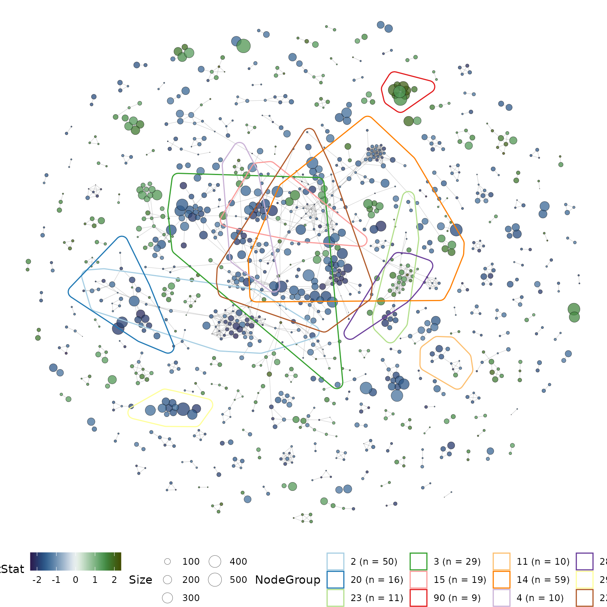
Characterise gene-set clusters
Gene-set clusters identified can be assessed for their biological similarities using text-mining approaches. Here, we perform a frequency analysis (adjusted for using the inverse document frequency) on the gene-set names or their short descriptions to assess recurring biological themes in clusters. These results are then presented as word clouds.
#all gene-sets have names
sapply(siggs[1:3], setName)## [1] "GO_TRICARBOXYLIC_ACID_METABOLIC_PROCESS"
## [2] "GO_LABYRINTHINE_LAYER_MORPHOGENESIS"
## [3] "GO_DNA_UNWINDING_INVOLVED_IN_DNA_REPLICATION"
#almost all gene-sets have short descriptions
sapply(siggs[1:3], description)## [1] "The chemical reactions and pathways involving dicarboxylic acids, any organic acid containing three carboxyl (COOH) groups or anions (COO-). [GOC:mah]"
## [2] "The process in which the labyrinthine layer of the placenta is generated and organized. [GOC:dph]"
## [3] "The process in which interchain hydrogen bonds between two strands of DNA are broken or 'melted', generating unpaired template strands for DNA replication. [ISBN:071673706X, ISBN:0815316194]"These can be used to automatically annotate gene-sets
#compute and plot the results of text-mining: using gene-set name
p2 = plotMsigWordcloud(msigGsc = siggs, groups = grps[1:12], type = 'Name')
p2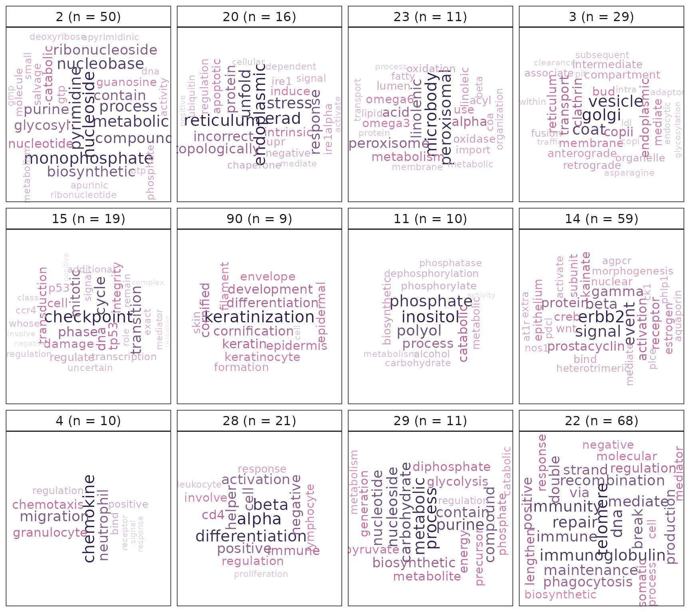
#compute and plot the results of text-mining: using gene-set short description
plotMsigWordcloud(msigGsc = siggs, groups = grps[1:12], type = 'Short')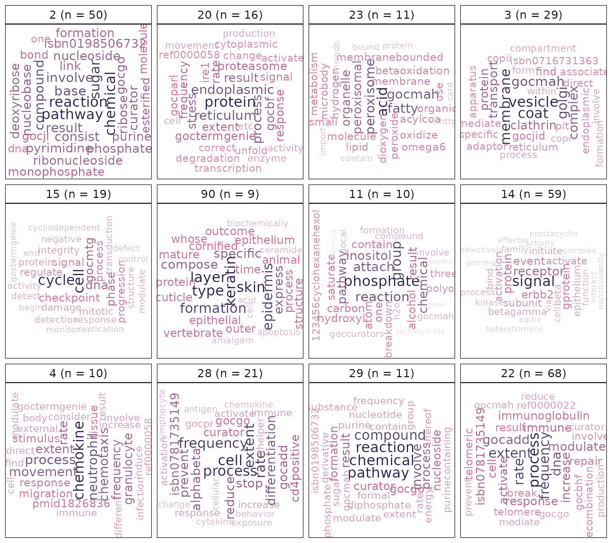
Visualise gene-level statistics for gene-set clusters
Gene-level statistics for each gene-set cluster can be visualised to better understand the genes contributing to significance of gene-sets. Gene-level statistics can be passed onto the plotting function as a named vector. A jitter is applied on the x-axis (due to its discrete nature).
#plot the gene-level statistics (logFC)
p3 = plotGeneStats(gStats,
msigGsc = siggs,
groups = grps[1:12],
statName = 'logFC')
#since all vissE plots are ggplot2 objects, they can be modified
p3 = p3 + geom_hline(yintercept = 0, colour = 2, lty = 2)
p3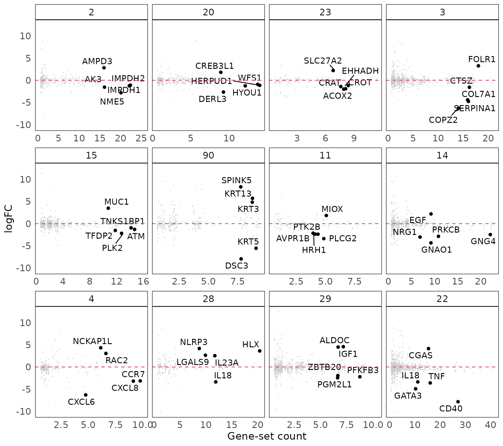
Interpreting biology from vissE
We can combine results from all three plots to provide a holistic view of the data.
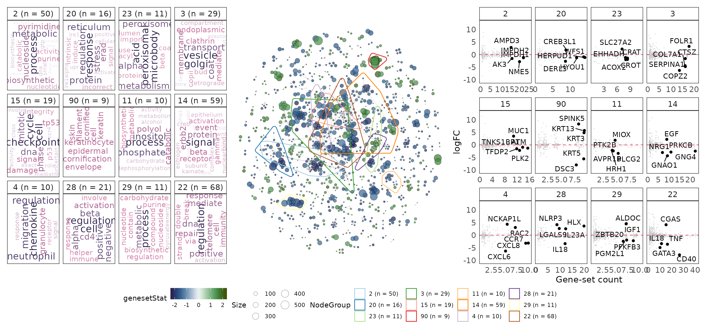
Cluster 90 is going up in PMC42-LA compared to PMC42-ET and is tightly clustered.
Keratin associated genes (KRT-x) are well represented in this cluster.
GRHL2 (Transcription Factor Grainyhead-like 2) is suppresses TGF-beta induced EMT. Regulates epithelial morphogenesis acting as a target gene-associated transcriptional activator of apical junctional complex components.
OVOL2 (Ovo Like Zinc Finger 2) is a zinc-finger transcription repressor factor which induces mesenchymal-to-epithelial (MET) transition.
CDH-3 (P-cadherin) potentially identify an “intermediate/metastable” EMT state.
#investigate specific clusters
set.seed(21) #set seed for reproducible layout
#select group to plot
g = '90'
#compute and plot vissE panels for the group
p1_g = plotMsigNetwork(gs_ovnet, markGroups = grps[g], genesetStat = gsStats)
p2_g = plotMsigWordcloud(msigGsc = siggs, groups = grps[g], type = 'Short')
p3_g = plotGeneStats(
gStats,
msigGsc = siggs,
groups = grps[g],
statName = 'logFC',
topN = 25
) + geom_hline(yintercept = 0, lty = 2, colour = 2)
p2_g + p1_g + p3_g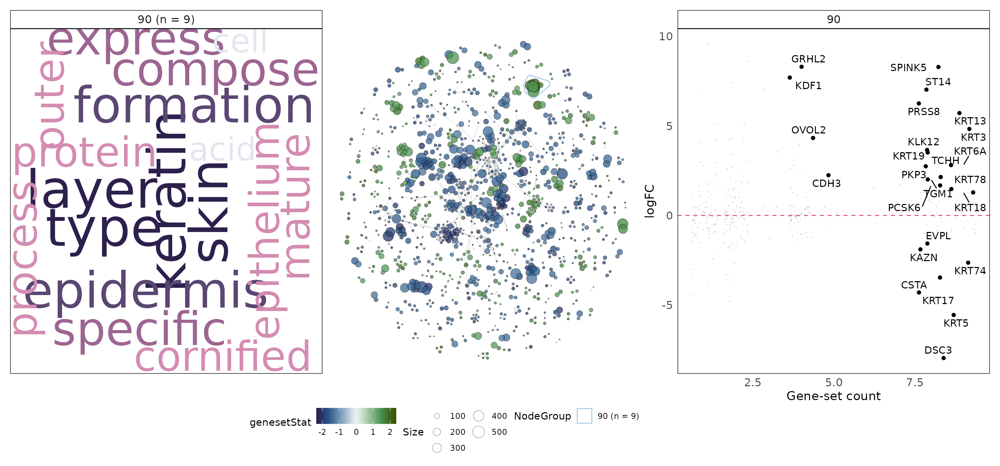
Packages used
This workflow depends on various packages from version 3.14 of the Bioconductor project, running on R version 4.1.0 (2021-05-18) or higher. The complete list of the packages used for this workflow are shown below:
## R version 4.1.0 (2021-05-18)
## Platform: x86_64-pc-linux-gnu (64-bit)
## Running under: Ubuntu 20.04.2 LTS
##
## Matrix products: default
## BLAS/LAPACK: /usr/lib/x86_64-linux-gnu/openblas-pthread/libopenblasp-r0.3.8.so
##
## locale:
## [1] LC_CTYPE=en_US.UTF-8 LC_NUMERIC=C
## [3] LC_TIME=en_US.UTF-8 LC_COLLATE=en_US.UTF-8
## [5] LC_MONETARY=en_US.UTF-8 LC_MESSAGES=C
## [7] LC_PAPER=en_US.UTF-8 LC_NAME=C
## [9] LC_ADDRESS=C LC_TELEPHONE=C
## [11] LC_MEASUREMENT=en_US.UTF-8 LC_IDENTIFICATION=C
##
## attached base packages:
## [1] stats4 stats graphics grDevices utils datasets methods
## [8] base
##
## other attached packages:
## [1] igraph_1.2.6 patchwork_1.1.1
## [3] vissE_1.1.0 msigdb_1.1.0
## [5] singscore_1.13.1 emtdata_1.1.0
## [7] GSEABase_1.55.1 graph_1.71.2
## [9] annotate_1.71.0 XML_3.99-0.7
## [11] AnnotationDbi_1.55.1 edgeR_3.35.0
## [13] limma_3.49.4 ExperimentHub_2.1.4
## [15] AnnotationHub_3.1.5 BiocFileCache_2.1.1
## [17] dbplyr_2.1.1 SummarizedExperiment_1.23.1
## [19] Biobase_2.53.0 GenomicRanges_1.45.0
## [21] GenomeInfoDb_1.29.3 IRanges_2.27.2
## [23] S4Vectors_0.31.1 BiocGenerics_0.39.2
## [25] MatrixGenerics_1.5.3 matrixStats_0.60.1
## [27] ggplot2_3.3.5 GenesetAnalysisWorkflow_0.9.1
##
## loaded via a namespace (and not attached):
## [1] systemfonts_1.0.2 plyr_1.8.6
## [3] splines_4.1.0 digest_0.6.27
## [5] htmltools_0.5.1.1 fansi_0.5.0
## [7] magrittr_2.0.1 memoise_2.0.0
## [9] tm_0.7-8 Biostrings_2.61.2
## [11] textshape_1.7.3 pkgdown_1.6.1
## [13] colorspace_2.0-2 blob_1.2.2
## [15] rappdirs_0.3.3 ggrepel_0.9.1
## [17] sylly_0.1-6 textshaping_0.3.5
## [19] xfun_0.25 dplyr_1.0.7
## [21] crayon_1.4.1 RCurl_1.98-1.4
## [23] jsonlite_1.7.2 hexbin_1.28.2
## [25] glue_1.4.2 polyclip_1.10-0
## [27] gtable_0.3.0 zlibbioc_1.39.0
## [29] XVector_0.33.0 DelayedArray_0.19.1
## [31] scico_1.2.0 scales_1.1.1
## [33] qdapRegex_0.7.2 DBI_1.1.1
## [35] Rcpp_1.0.7 viridisLite_0.4.0
## [37] xtable_1.8-4 bit_4.0.4
## [39] textclean_0.9.3 httr_1.4.2
## [41] ggwordcloud_0.5.0 RColorBrewer_1.1-2
## [43] ellipsis_0.3.2 pkgconfig_2.0.3
## [45] farver_2.1.0 sass_0.4.0
## [47] locfit_1.5-9.4 utf8_1.2.2
## [49] tidyselect_1.1.1 labeling_0.4.2
## [51] rlang_0.4.11 reshape2_1.4.4
## [53] later_1.3.0 munsell_0.5.0
## [55] BiocVersion_3.14.0 tools_4.1.0
## [57] cachem_1.0.6 generics_0.1.0
## [59] RSQLite_2.2.8 evaluate_0.14
## [61] stringr_1.4.0 fastmap_1.1.0
## [63] yaml_2.2.1 ragg_1.1.3
## [65] textstem_0.1.4 org.Hs.eg.db_3.13.0
## [67] knitr_1.33 bit64_4.0.5
## [69] fs_1.5.0 purrr_0.3.4
## [71] KEGGREST_1.33.0 koRpus_0.13-8
## [73] mime_0.11 slam_0.1-48
## [75] xml2_1.3.2 compiler_4.1.0
## [77] filelock_1.0.2 curl_4.3.2
## [79] png_0.1-7 interactiveDisplayBase_1.31.2
## [81] koRpus.lang.en_0.1-4 syuzhet_1.0.6
## [83] tibble_3.1.3 statmod_1.4.36
## [85] tweenr_1.0.2 bslib_0.2.5.1
## [87] stringi_1.7.3 highr_0.9
## [89] desc_1.3.0 lattice_0.20-44
## [91] Matrix_1.3-4 vctrs_0.3.8
## [93] pillar_1.6.2 lifecycle_1.0.0
## [95] BiocManager_1.30.16 jquerylib_0.1.4
## [97] data.table_1.14.0 bitops_1.0-7
## [99] httpuv_1.6.2 sylly.en_0.1-3
## [101] R6_2.5.1 promises_1.2.0.1
## [103] KernSmooth_2.23-20 lexicon_1.2.1
## [105] MASS_7.3-54 assertthat_0.2.1
## [107] rprojroot_2.0.2 withr_2.4.2
## [109] GenomeInfoDbData_1.2.6 parallel_4.1.0
## [111] grid_4.1.0 prettydoc_0.4.1
## [113] tidyr_1.1.3 rmarkdown_2.10
## [115] ggnewscale_0.4.5 ggforce_0.3.3
## [117] NLP_0.2-1 shiny_1.6.0